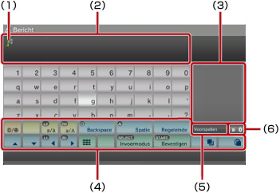
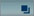
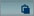
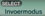
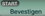
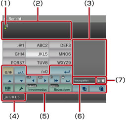
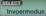

Over het XMB™-menu > Het toetsenbord gebruiken
Het toetsenbord gebruiken
Het toetsenbord wordt automatisch weergegeven wanneer tekstinvoer vereist is. Deze instructies gaan uit van het gebruik van het Nederlandse toetsenbord. Raadpleeg de gebruikershandleiding voor de respectieve taal voor informatie over het gebruik van toetsenborden in andere talen.

(1) |
Cursor |
|---|---|
(2) |
Tekstinvoerveld |
(3) |
Geeft voorspellingen weer |
(4) |
Bedieningstoetsen |
(5) |
Geeft weer of de voorspelmodus is ingeschakeld |
(6) |
Weergave invoermodus |
Lijst met toetsen
De toetsen die worden weergegeven, zijn afhankelijk van de invoermodus en andere voorwaarden.
 |
Voegt een symbool of emoticon in |
|---|---|
 / /  |
Wisselt het type tekens dat wordt ingevoerd |
| Verplaatst de aanwijzer | |
 |
Wist het teken links van de aanwijzer |
| Voegt een spatie in | |
| Voegt een regeleinde in | |
 / |
Tekst kopiëren of plakken |
 |
Schakelt over naar het minitoetsenbord |
 |
Wijzigt de invoermodus |
 |
Bevestigt tekens die zijn getypt maar niet ingevoerd / Sluit het toetsenbord |
Tekens invoeren
Met de voorspelmodus kunt u de eerste letters van het woord invoeren, waardoor een lijst verschijnt met vaak gebruikte woorden die beginnen met deze letters. U kunt dan de richtingstoetsen gebruiken om het gewenste woord te selecteren. Als u klaar bent met het invoeren van tekst, selecteer dan de "Bevestigen"-toets om het toetsenbord te sluiten.
Opmerkingen
- U kunt mogelijk geen emoticons gebruiken in bepaalde invoermodi.
- De talen die u kunt gebruiken voor tekstinvoer zijn de ondersteunde systeemtalen. Als de systeemtaal bijvoorbeeld is ingesteld op Frans, kunt u tekst in het Frans invoeren. U kunt de systeemtaal instellen via
 (Instellingen) >
(Instellingen) >  (Systeeminstellingen) > [Systeemtaal].
(Systeeminstellingen) > [Systeemtaal]. - U kunt het hele tekstinvoerveld wissen door tegelijkertijd op de
 -toets + de L1-toets te drukken.
-toets + de L1-toets te drukken.
Een aangesloten toetsenbord gebruiken
U kunt tekst invoeren met een USB-toetsenbord of Bluetooth®-toetsenbord (beide apart verkrijgbaar). Wanneer het tekstinvoerscherm wordt weergegeven, kunt u het aangesloten toetsenbord gebruiken door op een toets op het aangesloten toetsenbord te drukken.
Opmerkingen
- Voor meer informatie over het aansluiten van een Bluetooth®-toetsenbord, zie (Instellingen) >
 (Randapparatuurinstellingen) > [Bluetooth®-apparaten beheren] in deze handleiding.
(Randapparatuurinstellingen) > [Bluetooth®-apparaten beheren] in deze handleiding. - U kunt de voorspelmodus niet gebruiken wanneer u een aangesloten toetsenbord gebruikt.
- U kunt een regel afbreken in het tekstinvoerveld door op ALT + ENTER te drukken. U kunt enkel een regel afbreken als dat gepast is, bijvoorbeeld als u een bericht tikt onder de categorie
 (Vrienden).
(Vrienden). - U kunt het hele tekstinvoerveld wissen door tegelijkertijd op SHIFT + BACKSPACE te drukken.
- U kunt de gekopieerde tekst plakken door te drukken op Ctrl + V. De laatst gekopieerde tekst wordt geplakt.
Het minitoetsenbord gebruiken
Als u selecteert met het grote toetsenbord, schakelt het over naar het minitoetsenbord. Op het minitoetsenbord zijn meerdere tekens toegewezen aan één toets.

(1) |
Cursor |
|---|---|
(2) |
Tekstinvoerveld |
(3) |
Geeft voorspellingen weer |
(4) |
Geeft de tekens weer die kunnen worden ingevoerd met de geselecteerde toets. |
(5) |
Bedieningstoetsen |
(6) |
Geeft weer of de voorspelmodus is ingeschakeld |
(7) |
Weergave invoermodus |
 -toets drukt, wijzigt het teken dat kan worden ingevoerd. Om [L] in te voeren, bijvoorbeeld, selecteert u
-toets drukt, wijzigt het teken dat kan worden ingevoerd. Om [L] in te voeren, bijvoorbeeld, selecteert u  en drukt u zes keer op de
en drukt u zes keer op de  om de cursor achter de [L] te plaatsen. Selecteer vervolgens
om de cursor achter de [L] te plaatsen. Selecteer vervolgens Opmerking
U kunt ook de tekstinvoermethode met één toets gebruiken. Gebruik de toets "Opties" om de tekstinvoermethode te wijzigen. Wanneer u de methode met één enkele toets gebruikt, kunnen woorden die kunnen worden gevormd uit combinaties van één letter (of cijfer) op elke geselecteerde toets worden weergegeven als voorspellingen voor de tekstinvoer. Als u bijvoorbeeld de toets "DEF3" selecteert, wordt een overzicht van woorden beginnend met d, e, f of 3 weergegeven in de lijst met voorspellingen rechts van het schermtoetsenbord. Als het symbool ">" wordt weergegeven, blijft u letters invoeren tot de voorspellingen worden weergegeven.
Lijst met toetsen
De toetsen die worden weergegeven, zijn afhankelijk van de invoermodus en andere voorwaarden.
 |
Voegt een symbool in |
|---|---|
 |
Wisselt tussen hoofdletters en kleine letters |
 |
Voegt een regelafbreking in |
| Verplaatst de cursor | |
 |
Verwijdert het teken links van de cursor |
 |
Voegt een spatie in |
/  |
Tekst kopiëren of plakken |
 |
Schakelt over naar het grote toetsenbord |
 |
Geeft het optiesmenu weer |
 |
Wisselt de invoermodus |
| Bevestigt tekens die zijn getypt maar niet ingevoerd / Sluit het toetsenbord |